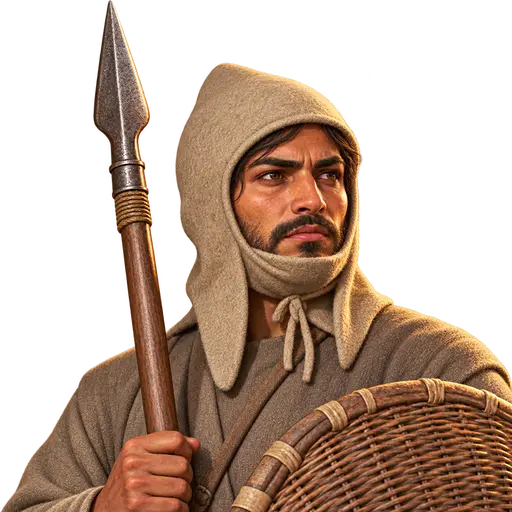
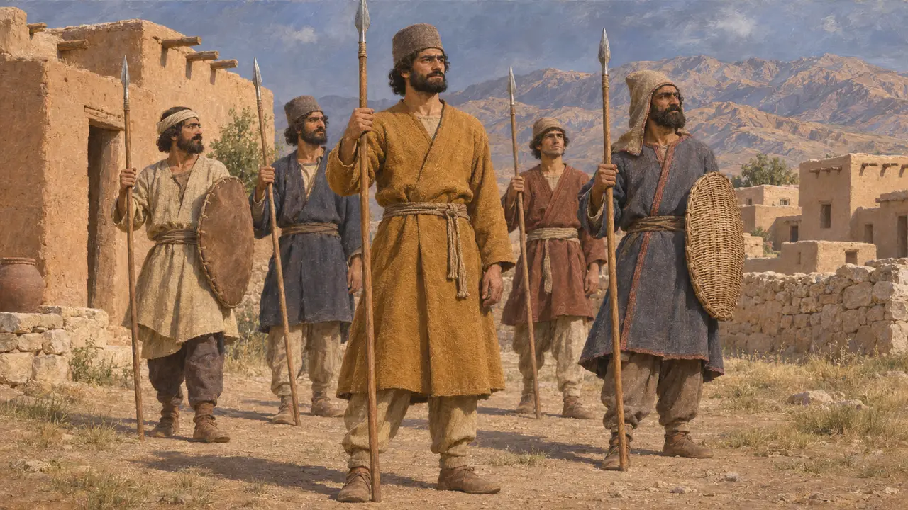
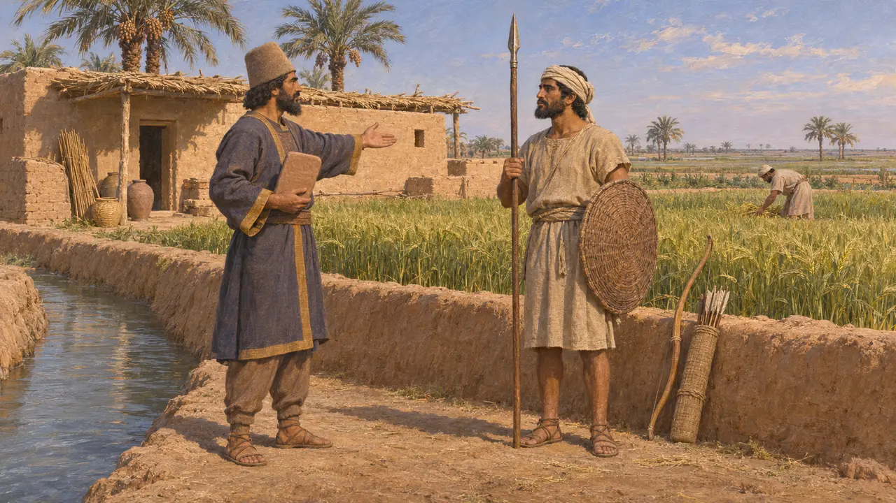
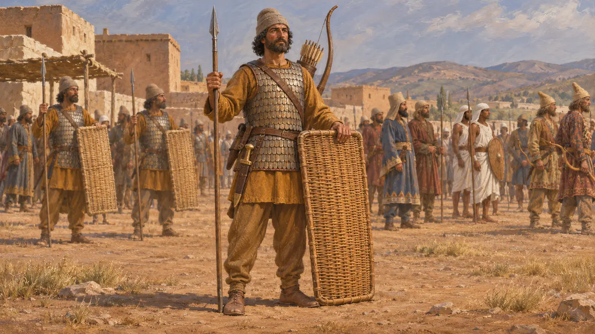
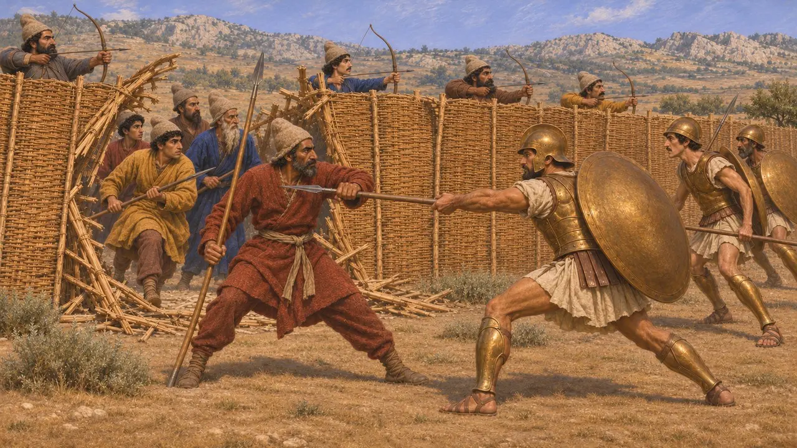
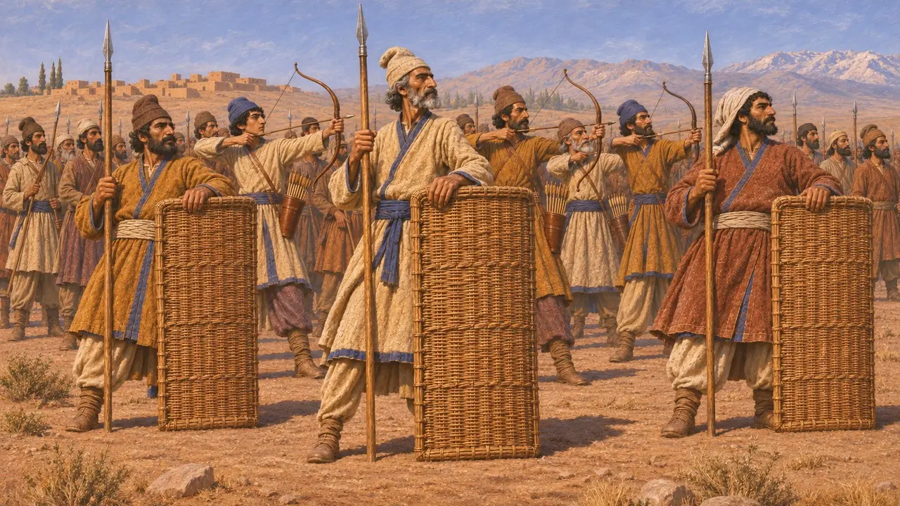

Enciclopedia › Soldados y naves

Lancero de leva
Soldado de a pie reclutado por obligación para el ejército del Rey aqueménida, hacia 550-479 a. e. c.
Además de su guardia y de las guarniciones permanentes, el Rey persa reclutaba gran parte de su infantería mediante levas entre persas, medos y pueblos sometidos. Al menos en Babilonia, muchos de esos hombres debían servicio porque poseían tierras con esa condición. Los hombres de leva llenaban los grandes ejércitos de Darío y Jerjes, y los escritores griegos los juzgaban por cómo se desenvolvían frente a los hoplitas fuertemente acorazados.
En el juego: En el juego, un hombre de la ciudad con lanza y escudo de mimbre que mantiene la línea cuando son muchos, pero se quiebra ante hombres entrenados. Históricamente, buena parte de la leva procedía de tierras concedidas a cambio de servicio, y la infantería persa solía llevar también arco.

Kara: el pueblo y el ejército
En los documentosEn persa antiguo, la palabra kara significaba a la vez el pueblo y el ejército, señal de que los combatientes procedían del conjunto de la población. En la inscripción de Behistún, Darío cuenta cómo envió a sus generales con el ejército persa y medo que le permaneció fiel contra los rebeldes de 522-521. La inscripción registra batallas y fechas, pero dice poco sobre cómo iban armados estos hombres.
DB

Tierra a cambio de servicio
En los documentosLos documentos babilonios muestran concesiones de tierra que conllevaban obligaciones militares: tierra de arco, tierra de caballo y tierra de carro, cuyos titulares debían un soldado o un pago en plata. El testimonio más completo, el archivo de Murashu de Nippur, data de la segunda mitad del siglo V, después del periodo del juego. Algunos textos anteriores dispersos sugieren que la tierra de arco ya existía bajo los primeros reyes, y el sistema ayuda a explicar cómo el Rey podía movilizar a tantos hombres.
M. Stolper, Entrepreneurs and Empire, 1985

Heródoto sobre la infantería persa
Relato antiguoHeródoto cuenta que la infantería persa de Jerjes llevaba gorros blandos de fieltro, túnicas con mangas y corazas de escamas. Añade que portaba escudos de mimbre, lanzas cortas, grandes arcos con flechas de caña y dagas colgadas junto al muslo derecho. Después enumera decenas de contingentes de pueblos súbditos, cada uno con su propio equipo autóctono. Los historiadores consideran muy exagerada su cifra total de 1.700.000 soldados de a pie.
Herodotus 7.60-61

El muro de mimbre de Platea
Relato antiguoHeródoto cuenta que en Platea, en el 479, los persas juntaron sus escudos de mimbre a modo de barrera y disparaban flechas desde detrás de ella. Cuando los espartanos la rompieron, los persas lucharon cuerpo a cuerpo, agarrando las lanzas enemigas. Heródoto dice que no eran inferiores en valor ni en fuerza, pero carecían de armadura y de destreza para el combate cuerpo a cuerpo, y se lanzaban al ataque en pequeños grupos.
Herodotus 9.61-63

Portaescudos y arqueros
En disputaLos autores modernos suelen llamar sparabara a los hombres de escudo de primera fila, a partir de una palabra persa reconstruida para «escudo», pero el término no está atestiguado en las fuentes como nombre de unidad. Los historiadores discrepan sobre si los portadores de escudo formaban una fila aparte que protegía a los arqueros o si cada hombre llevaba arco y lanza. También se debate cuánto adiestramiento recibían los hombres de leva y hasta qué punto lo minimizaron los autores griegos.
N. Sekunda, The Persian Army 560-330 BC, 1992
Fuentes
- Herodotus 7.60-61
- Herodotus 9.61-63
- DB
- M. Stolper, Entrepreneurs and Empire, 1985
- N. Sekunda, The Persian Army 560-330 BC, 1992
- P. Briant, From Cyrus to Alexander, 2002